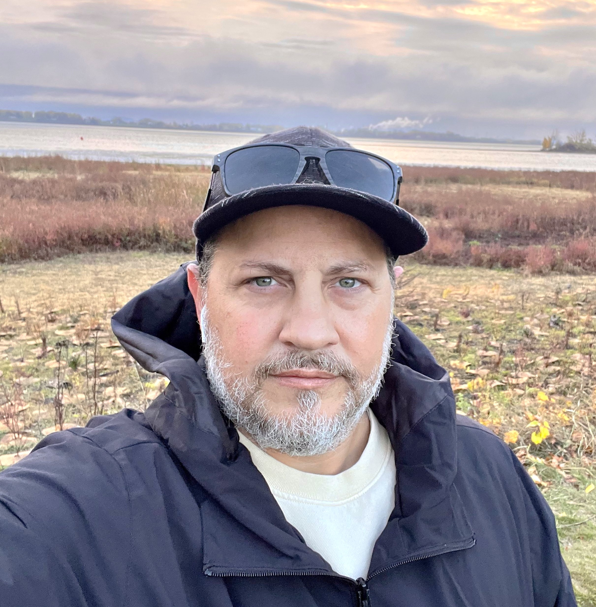

Bienvenue sur mon portfolio
Parcours

Je suis actuellement étudiant en programmation et je développe mes compétences en informatique. J'ai commencé par apprendre les bases de la programmation avec Python, ce qui m'a permis de comprendre la logique derrière le code et la résolution de problèmes. Dans ma formation, j'explore maintenant le développement web et les bases de données. J'aime apprendre de nouvelles technologies et améliorer mes projets au fil du temps. Mon objectif est de devenir un développeur compétent capable de créer des applications utiles et efficaces.
« Apprendre n'épuise jamais l'esprit, ça ne fait que l'enflammer. » Leonardo da Vinci
Compétences
Au cours de ma formation, j'ai développé plusieurs compétences en informatique. Je possède des bases en programmation avec Python ainsi qu'en développement web avec HTML. J'apprends également à travailler avec les bases de données et à comprendre comment organiser et structurer l'information efficacement. J'utilise des outils comme Visual Studio Code pour coder et gérer mes projets. Je suis quelqu'un de curieux, persévérant et motivé à continuer d'apprendre dans le domaine de la technologie.
Objectifs
Mon objectif est de continuer à développer mes compétences en programmation et en développement web. Je souhaite apprendre davantage de langages et approfondir mes connaissances en bases de données et en développement d'applications. À long terme, j'aimerais travailler dans le domaine de la technologie comme développeur et participer à des projets intéressants. Je veux aussi créer mes propres projets afin d'améliorer mes compétences et bâtir un portfolio solide.